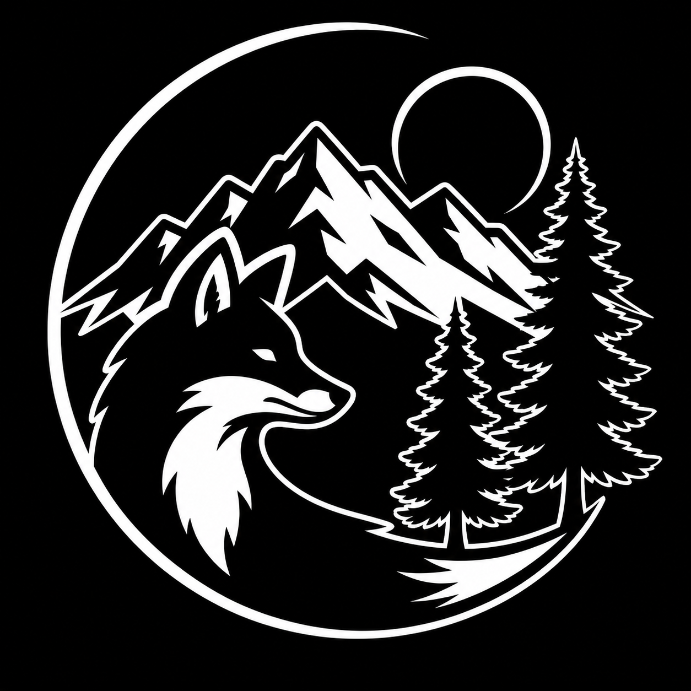

Experiment
Early projects moved between websites, technology, media, art, and small-business concepts.
Who we are
Fox & Timber grew through experimentation, adaptation, and a long trail of ideas that were often more complete in imagination than they ever became in the physical world.
The beginning
For years, the instinct was always the same: imagine a company, name it, picture the product, shape the identity, and see the entire world around it before anything had been manufactured.
Fox & Timber became the place where that instinct stopped being dismissed as “just another idea” and became the work itself.
The evolution
Early projects moved between websites, technology, media, art, and small-business concepts.
The company learned that its strongest skill was not operating every idea. It was making the idea understandable and believable.
Brand creation became the center: strategy, identity, visual direction, marketing concepts, and consulting.
Today, Fox & Timber helps other people see what their businesses could become before those businesses fully exist.

Why the fox
The fox moves between environments without losing itself. That became the model for the company: flexible enough to work across industries, disciplined enough to keep a clear identity, and curious enough to find paths others overlook.